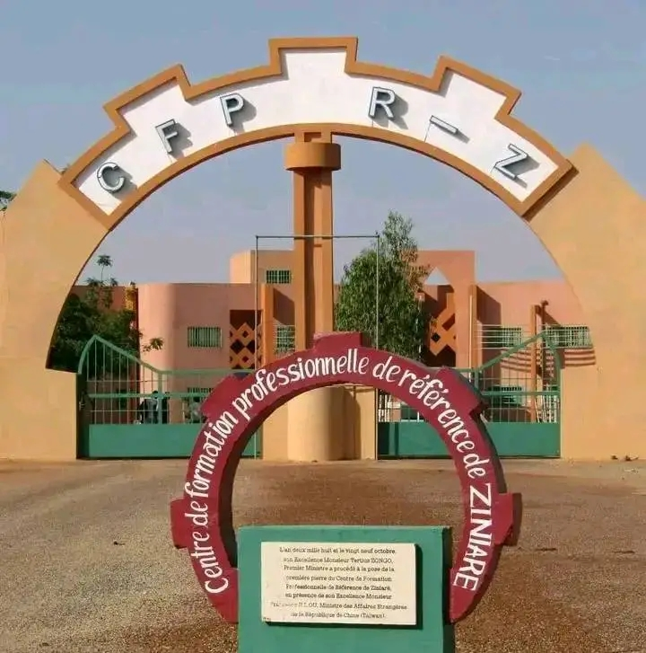

Centre de Formation Professionnelle de Référence de ZINIARE
Placé sous la tutelle technique du Ministère de la Jeunesse et de la Promotion de l’Entrepreneuriat des Jeunes, et la tutelle financière du Ministère de l’Economie, des Finances et du Développement, le Centre de Formation Professionnelle de Référence de Ziniaré(CFPR-Z) est un Etablissement Public à caractère scientifique, culturel et technique, doté de la personnalité morale et de l’autonomie financière créé par décret N°2010-662/PRES/PM/MJE/MEF du 19 octobre 2010 portant création d’un établissement public à caractère scientifique, culturel et technique dénommé Centre de Formation Professionnelle de Référence de Ziniaré (CFPR-Z). Ses missions sont régies par le décret n°2013-770/PRES/PM/MEF/MJFPE du 17 septembre 2013 portant approbation de ses statuts particuliers. Former les jeunes et les apprenants aux profils voulus et recherchés par le marché de l’emploi, par l’économie présente et future et renforcer ainsi leur employabilité en mettant l’accent à la fois sur la qualification aux métiers et sur l’esprit d’initiative et d’entreprise ; favoriser et accélérer l’insertion professionnelle des apprenants et des stagiaires en développant, en améliorant ou en adaptant leurs compétences techniques et professionnelles, et en les accompagnants dans leurs projets professionnels en vue de la création d’entreprises ; Mettre en place l’ingénierie des dispositifs de formation et développer des outils didactiques et pédagogiques de formation professionnelle pour un meilleur encadrement des formations ; Développer des mécanismes et des outils d’évaluation et de certification des formations ; Répondre aux besoins et demandes de l’entreprise et des acteurs de l’économie en matière de compétences voulues et, conséquemment, de formation professionnelle ; contribuer au renforcement de la formation continue par des prestations de recyclage des travailleurs en vue de leur adaptabilité aux évolutions techniques et technologiques, à celle de l’emploi et du monde du travail ; contribuer, de manière générale, à la mise en œuvre de la politique nationale d’enseignement
CFPRZ : un lieu à visiter absolument !